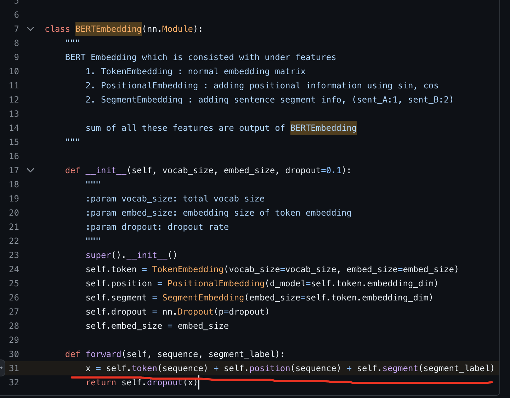
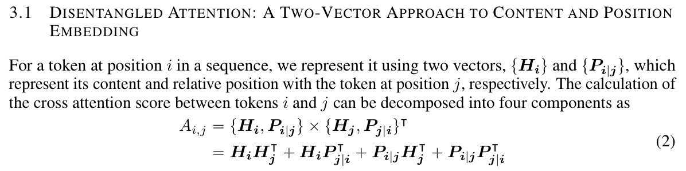
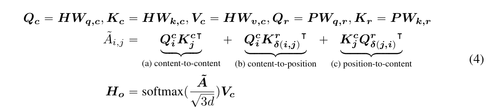
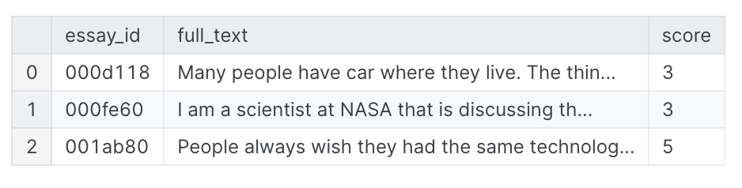
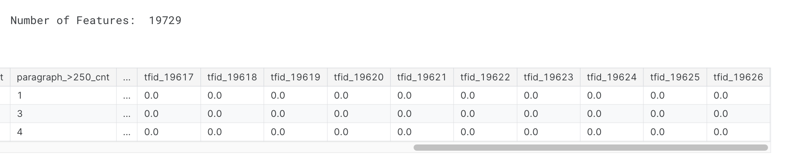

参考的notebook的地址: DeBERTa & LightGBM for Automated Essay Scoring.
首先会简要学习一下deberta,然后会看下notebook里面是如何做feature engineering的.
DeBERTa
v1: DeBERTa: Decoding-enhanced BERT with Disentangled Attention
其中v1主要对两个部分做了改进: 一个是Disentangled Attention, 另一个是Enhanced mask decoder, 然后文中还提及到了新的对抗训练改进.
Disentangled Attention
我们知道bert里面对embedding的处理是相加的方法

不同于bert一个词只有一个content embedding和一个position embedding, 求和即位词嵌入; DeBERTa中每个词都有两个vector表示,而position embedding也是relative embedding,然后token_i和token_j的cross attention就可以由四个部分组成: content -> content, content -> positon, position -> content, position -> position.

然后后面具体的计算还挺复杂的, 不过说白了其实还是矩阵交叉, 有点类似之前看的ffm.

Enhanced Mask Decoder
前面讲到DeBERTa的attention用的是relative position,对比bert里面是input的时候直接加起来了,所以到这里其实deberta是缺少绝对位置信息的,可是绝对位置还是有用的,所以作者表示我们还是得加上绝对位置信息.
The BERT model incorporates absolute positions in the input layer. In DeBERTa, we incorporate them right after all the Transformer layers but before the softmax layer for masked token prediction.
所以说白了就是解码的时候(这里的解码个人感觉表示的其实是predict the masked word的意思)我们会加入absolute position来作为补充信息.
SCALE INVARIANT FINE-TUNING(SIFT)
对抗训练一般用来让模型更robust, 在nlp中比较合理的加入干扰的位置应该是在word embedding. 但是embedding本身范围并没有做normalization, 所以这里作者提出先对embedding做layernorm,然后再对embedding做干扰.
DeBERTa + Feature Engineering + LGBM
import
1 | import gc |
baseline DeBERTa
写了一长串, MODEL_PATHS里面是作者已经训练好了的DeBERTa, load进来, 多模型预测丢prediction.
1 | MAX_LENGTH = 1024 |
提取DeBERTa的prediction
1 | predicted_score = 0. |

Feature Engineering
1. text -> paragraph
依据换行划分自然段
1 | columns = [ |
2. data preprocessing
具体包括了:
- 缩写展开
- html移除
- 无用信息比如 @ 和标点符号的移除
1 | import string |
很专业好吧,这种缩写展开的词典肯定是经常做这份工作才能有的, 就像pentest选手人手password爆破字典一样.
3. count error
1 | import spacy |
这里就是依据英语单词字典, 将作文中每个词映射到词根然后判断词根是否出现在字典中, 一旦不在字典中就是拼写错误.
第一波处理(paragraph)
预处理, 移除标点, 计算拼写错误, 计算自然段长度, 计算每个句子长度.
设置两个划分list, 统计自然段长度大于xx作为一个feature, 小于多少作为一个feature
一般特征加上拼写错误数量: 统计均值,最大,最小值,峰值等等一些统计学数据.
1 | def Paragraph_Preprocess(tmp): |
这时候特征数量来到了53
第二波处理(sentence)
类似于paragraph
1 | def Sentence_Preprocess(tmp): |
word
然后对单词长度处理,个人感觉有点离谱了,不过就当先了解下可以做的处理了.
1 | # word feature |
tfidf
真没想到居然还是用得到这个
1 | vectorizer = TfidfVectorizer( |
可以看到特征数量直接开始爆炸, 但tf-idf的老问题还是存在

count
1 | vectorizer_cnt = CountVectorizer( |
整合deberta
1 | import joblib |
evaluation metrics
比赛给出的要求是会看quadratic weighted kappa
1 | def quadratic_weighted_kappa(y_true, y_pred): |
整合数据,丢LGBM
1 | import pickle |
test data prediction
预处理
1 | tmp = Paragraph_Preprocess(test) |
计算概率
1 | probabilities = [] |
update(2024.05.22)
最新跟进, 可以调用另外一个competition的notebook来继续做feature extraction. 另一个notebook是FB3 Deberta Family Inference [9/28 UPDATED]
这个notebook做了文本的连贯性,词汇量,语法等层面的处理, 这里直接调用FB模型跑AES的train_data, 然后生成的数据作为feature+DeBERTa+LGBM做进一步学习, train结束后对testdata也做FB处理然后再做预测. 最后分数从0.82提升到了0.822.